開卷有益 ／
分科測驗 ／ 生物 ／ 111 年111 年分科測驗生物試題與答案
這一頁是民國 111 年分科測驗生物的整份歷屆試題，共 44 題，題目與標準答案出自大考中心 分科測驗歷年試題（依著作權法 §9，考試試題不受著作權保護），其中 44 題附有詳解。以下逐題列出題幹、選項與答案；要計時作答或記錄成績，請用線上練習。
大學入學考試中心原始場次代碼：分科生物
線上作答這一科 →
全部 44 題
第 1 題
圖1左為植物小苗,箭頭所指構造是圖1右由甲至丁中何者
甲 發育而來?
乙
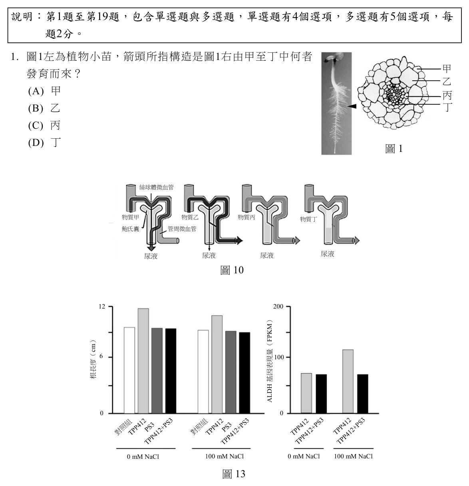
（A） 甲 丙（B） 乙 丁（C） 丙（D） 丁
圖1答案：（A）
詳解與考點 正解：植物小苗的地上部與地下根系，都要追溯到胚內已分化的原基，而不是由種皮或儲藏組織直接轉變。以發育來源對照題目的標號，箭頭所指的構造分別來自甲與丙，故選 A。
B：乙與丁不構成箭頭所示兩個構造的完整發育來源，將非對應的胚部位一併列入。
C：只列丙只能說明其中一個來源，未涵蓋箭頭所指的另一個構造。
D：丁不是該小苗構造的對應胚原基，且單列一項也不足以說明兩個發育來源。
本題考點：胚的發育（embryonic development）——幼苗器官須由胚內相應的原基追溯；植物器官同源（organ homology）——判讀示意圖時以發育來源為準，不以萌發後的位置或大小代替；種子構造（seed structure）——胚、儲藏組織與種皮的功能不同，不能互相替代。
第 2 題
下列何種成分同時存在於肽聚糖、纖維素以及肝醣(糖)中?
（A） 脂質（B） 多肽分子（C） 甘油醛（D） 葡萄糖答案：（D）
詳解與考點 正解：纖維素與肝醣分別由不同鍵結方式連接的葡萄糖單體組成；肽聚糖中的 N-乙醯葡萄糖與 N-乙醯胞壁酸也具有葡萄糖衍生的六碳糖骨架。因此三者都可找到葡萄糖相關結構，故選 D。
A：脂質不是纖維素或肝醣的結構單體，不能作為三者共同成分。
B：肽聚糖含有短肽鏈，但纖維素與肝醣都是多醣，沒有多肽分子。
C：甘油醛是三碳糖，並非這三種聚合物共同的構造單體。
本題考點：多醣（polysaccharide）——先辨認聚合物由何種單醣或其衍生物組成；纖維素（cellulose）與肝醣（glycogen）——兩者皆由葡萄糖組成，但鍵結型式與功能不同；肽聚糖（peptidoglycan）——看到細菌細胞壁時，要同時想到糖鏈與短肽鏈。
第 3 題
休耕時,農民常在田裡種植綠肥植物,於復耕前將它們翻入土內以改善土壤並防止雜草
生長,同時提升稻田土壤肥力,減少化肥使用。依據下列四種植物的特性,何者最為適
合於台灣中部11月二期稻作採收後當綠肥植物栽種?
（A） 田菁:豆科一年生草本植物,適應熱帶多雨、適溫為25~35°C（B） 向日葵:菊科一年生草本植物,適應溫帶少雨、適溫為10~25°C（C） 埃及三葉草:豆科一年生草本植物,不耐霜生長、適溫為10~25°C（D） 黃波斯菊:菊科一年生草本植物,耐旱生長、適溫為15~35°C答案：（C）
詳解與考點 正解：綠肥要同時符合栽種季節與提升土壤肥力的目的。臺灣中部 11月二期稻作採收後進入較涼時段，埃及三葉草是豆科且適溫為 10-25°C，可透過與根瘤菌的關係增加可利用氮，最符合條件。故選 C。
A：田菁雖為豆科，但適溫為 25-35°C，和題目指定的採收後較涼栽種時段不如（C）相符。
B：向日葵的適溫可配合季節，卻不是豆科；看似適合的溫度不能取代綠肥增加氮素的功能。
D：黃波斯菊耐旱且適溫範圍廣，但屬菊科，沒有豆科與根瘤菌共生所帶來的固氮優勢。
本題考點：綠肥（green manure）——選擇時同時比對季節適性與翻入土壤後的肥力效益；生物固氮（biological nitrogen fixation）——豆科與根瘤菌共生可增加土壤氮源；限制因子（limiting factor）——作物選擇不能只看單一特性，須同時滿足溫度與栽培目的。
第 4 題（多選）
某學者想探究眼蟲葉綠體的演化來源。根據美國生物學家瑪格麗斯的「內共生假說」,
下列哪些研究方向較為可行?
（A） 比較眼蟲細胞核與藍綠菌的遺傳物質成分（B） 探討眼蟲的葉綠體由幾層膜包覆（C） 比較眼蟲與陸生植物的葉綠體是否有相似的遺傳物質（D） 探討眼蟲行光合作用時是否具有固碳反應（E） 探討眼蟲行光合作用時是否會產生氧氣答案：（B）（C）
詳解與考點 正解：內共生假說要檢驗的是胞器是否保留了被吞噬生物的構造與遺傳線索。葉綠體膜的層數可用來推論曾經歷的包覆與內共生過程，葉綠體遺傳物質則可用來比較和其他光合生物的親緣關係，因此（B）、（C）可行。故選 BC。
B：不同的膜層數反映包覆歷程的可能性；觀察眼蟲葉綠體由幾層膜包覆，可提供內共生來源的構造證據。
C：比較眼蟲與陸生植物葉綠體的遺傳物質，可檢驗兩者葉綠體是否具有較近的演化關係。
A：內共生來源首先應比較葉綠體本身與候選共生生物的資料；眼蟲細胞核的遺傳物質受宿主演化影響，不能直接回答葉綠體來源。
D：固碳反應是光合作用的共同功能，能進行固碳不等於能辨別葉綠體的演化來源。
E：產生氧氣也是許多含葉綠體生物共有的功能特徵，鑑別力不足以追溯內共生關係。
本題考點：內共生假說（endosymbiotic theory）——追溯胞器來源時優先找膜與遺傳物質等保留證據；葉綠體基因體（chloroplast genome）——比較序列或遺傳物質可推論親緣；鑑別力（discriminatory power）——共有功能通常不如構造與遺傳特徵能區分演化來源。
第 5 題
法布瑞氏症是代謝異常造成的疾病。此病主要是因人體胞器中某一種分解大分子的酵
素發生缺陷,導致原應被分解的醣脂質,無法分解成小分子而被細胞再循環利用。下列
何者最可能是此症患者缺陷酵素存在的胞器?
（A） 內質網（B） 粒線體（C） 溶體（D） 高基氏體答案：（C）
詳解與考點 正解：題幹的關鍵是胞器內分解大分子的酵素缺陷，使醣脂質無法被拆解後再利用。溶體含有多種酸性水解酵素，負責分解細胞吞入或回收的物質，因此最可能是缺陷酵素所在的胞器。故選 C。
A：內質網主要參與蛋白質與脂質的合成、摺疊及運輸，並非細胞內分解醣脂質的主要場所。
B：粒線體以有氧呼吸與 ATP 生成為主要功能，不負責以水解酵素分解醣脂質。
D：高基氏體主要修飾、分類與運送蛋白質和脂質；分解大分子的水解反應主要在溶體中進行。
本題考點：溶體（lysosome）——看到胞內消化、酸性水解酵素或大分子分解時優先判斷；酸性水解酵素（acid hydrolase）——功能缺陷會造成受質在細胞內累積；胞器分工（organelle function）——以合成、能量轉換、修飾運輸與分解四類功能區分內質網、粒線體、高基氏體與溶體。
第 6 題（多選）
當一個人大量出汗,導致血液滲透壓上升、血量減少、血壓下降時,身體的調節機制會
啟動,盡量維持體內環境的恆定。下列相關敘述,哪些正確?
（A） 交感神經活性增加,使得心跳加快,血管收縮,血壓回升（B） 血液中腎素的濃度下降,減少腎小管對鈉的再吸收,降低血液滲透壓（C） 血液中抗利尿激素的濃度上升,使近曲小管對水的再吸收大量增加,以增加血量（D） 下視丘的口渴中樞受到刺激,產生飲水行為,增加血量,血壓回升（E） 血液中的心房排鈉肽濃度上升,抑制腎小管對鈉的再吸收,降低血液滲透壓答案：（A）（D）
詳解與考點 正解：大量出汗同時造成血量下降與血液滲透壓上升，補償方向必須是提高血壓並補回水分。交感神經、口渴與抗利尿反應都會被啟動；其中（A）與（D）符合這個共同判準。
A：血壓下降會提高交感神經活性，使心跳加快、周邊血管收縮，藉由增加心輸出量與血管阻力使血壓回升。
D：滲透壓上升會刺激下視丘的口渴中樞，飲水可補充水分、增加血量，因而有助於血壓回升。故選 AD。
B：血量與血壓下降時，腎臟會增加腎素分泌，經由系統作用提高鈉離子再吸收；敘述中的「腎素下降」與補償方向相反。
C：抗利尿激素濃度確會上升，但主要使遠曲小管與集尿管增加水分再吸收，不是使近曲小管大量再吸收水分。分辨關鍵在作用部位。
E：心房排鈉肽在心房受血量增加而伸展時較會上升；本題血量減少時不應上升，且排鈉會使血量更難回復。
本題考點：體液恆定（homeostasis）——遇到失水情境，同時判斷滲透壓、血量與血壓各朝哪個方向改變；腎素—血管張力素—醛固酮系統（renin-angiotensin-aldosterone system, RAAS）——血壓或腎灌流下降時，以保鈉保水的方向判斷其作用；抗利尿激素（antidiuretic hormone, ADH）——判斷水分回收時，要連同其主要作用的遠曲小管與集尿管判讀。
第 7 題（多選）
園藝作物的組織培養是很重要的技術,可以從一片葉子的部分組織透過不同植物荷爾
蒙來進行細胞分裂與分化產生癒合組織,最終再生成一棵植株。做此實驗所使用的組織
培養的培養基需含有哪些植物荷爾蒙?
（A） 乙烯（B） IAA（C） 茉莉酸（D） ABA（E） 細胞分裂素答案：（B）（E）
詳解與考點 正解：由葉片組織形成癒合組織並再生植株，必須讓未分化細胞能分裂，又依比例轉為根或芽；培養基核心為生長素與細胞分裂素。因此（B）與（E）共同提供組織培養所需的分裂與分化調控。
B：IAA 即吲哚乙酸（indole-3-acetic acid），屬生長素，可配合細胞分裂素促進癒合組織形成，且其相對濃度會影響根的分化。
E：細胞分裂素促進細胞分裂，並與生長素的比例共同調節芽與根的分化。故選 BE。
A：乙烯主要參與果實成熟、器官脫落及逆境反應，並非本題由葉片誘導癒合組織與再生的核心培養基激素。
C：茉莉酸主要介入受傷與防禦反應；葉片雖可能因切取而產生受傷訊號，但這不等於它是再生培養基的必要調控組合。
D：ABA 常與休眠、氣孔關閉及逆境耐受有關，整體上不利於題幹所需的持續細胞分裂與器官再生。
本題考點：植物組織培養（plant tissue culture）——從外植體再生植株時，先看是否要誘導細胞分裂與器官分化；生長素（auxin）與細胞分裂素（cytokinin）——比較兩者相對作用，較高的生長素傾向促根，較高的細胞分裂素傾向促芽；植物細胞全能性（cellular totipotency）——在適當培養條件下，已分化植物細胞可重新分裂並形成完整植株。
第 8 題
某生左手摸到熱燙的茶壺時,該手會立刻縮回並感覺到痛。下列有關此過程的敘述,何
者正確?
（A） 此過程無需脊髓的控制（B） 運動神經傳導抵達大腦,讓該生感覺到痛（C） 此過程是一種單純的反射（D） 此過程兼具反射和意識的活動答案：（D）
詳解與考點 正解：熱燙刺激引發的縮手必須先經脊髓完成反射弧，才能在大腦形成疼痛意識前迅速收回手；同一刺激的感覺訊息也會上傳大腦。因此本題描述同時含反射與意識活動，故選 D。
A：縮手反射的整合中樞在脊髓，雖然不必等待大腦先作判斷，仍需要脊髓內的神經元連結，不能說無需脊髓控制。
B：讓人感覺疼痛的是感覺神經傳入訊號經上行路徑抵達大腦；運動神經則把脊髓發出的命令傳至肌肉，使手縮回。
C：若只描述手立刻縮回，屬反射活動；題幹另明示「感覺到痛」，表示訊息已被大腦處理而產生意識經驗，故不只是單純反射。
本題考點：反射弧（reflex arc）——遇到快速保護動作時，依受器、感覺神經、脊髓、運動神經與效應器追蹤路徑；感覺傳入與運動傳出（sensory afferent and motor efferent pathways）——感覺神經把訊息送往中樞，運動神經把命令送至肌肉；痛覺（pain perception）——能意識到疼痛須有訊息上傳並經大腦處理，不能與脊髓反射混為一談。
臺灣高海拔有五種棲息地幾乎不重疊的特有種山椒魚。學者以DNA序列建構不同山椒魚物種的親緣關係(圖2),推測臺灣的山椒魚祖先應源 阿里山山椒魚自日本南部,經冰河時期的陸橋播遷至臺灣。在之後 楚南氏山椒魚
南湖山椒魚 臺灣的山椒魚的「間冰期」,臺灣本島內的山椒魚開始分歧演化成 臺灣山椒魚
五種不同物種,這個假說稱為島內分化論。但至今仍
觀霧山椒魚
沒有決定性證據,可證明臺灣本島內山椒魚的祖先
日本南部的山椒魚
是來到臺灣後才分化成不同物種,或是早在其他地
中國大陸的山椒魚
方種化之後才各自拓遷來臺,稱為島外分化論。 圖2
第 10 題
關於臺灣的山椒魚物種種化,下列哪一項觀察結果較支持島內分化論假說?
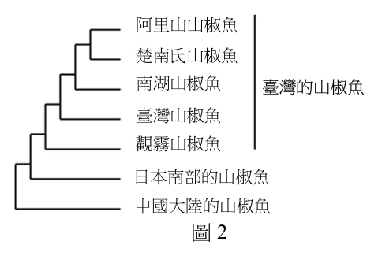
（A） 山椒魚的遷徙能力不佳,活動範圍小,無法翻山越嶺（B） 不同物種的山椒魚擇偶時對異性的體色有不同偏好（C） 山椒魚對產卵的位置選擇偏好有種間差異（D） 以人工授精雜交不同種的山椒魚後所得胚胎無法正常發育答案：（A）
詳解與考點 正解：島內分化論的核心是同一批祖先到達臺灣後，因本島內不同山區之間的隔離而逐漸分化。山椒魚遷徙能力差、活動範圍小，表示山脈與棲地破碎化足以限制基因交流，最能提供島內地理隔離促成種化的條件，故選 A。
B：不同體色偏好可支持已有族群之間的生殖隔離，卻不能區分隔離是在臺灣內部還是在遷入前形成。
C：產卵地偏好有種間差異同樣可在種化後才演化，不能單獨指向分化地點。
D：雜交胚胎無法正常發育表示生殖隔離已存在，但不提供該隔離形成於島內或島外的時空證據。
本題考點：異域種化（allopatric speciation）——地理障礙限制基因交流時，分化較容易累積；基因流（gene flow）——遷徙能力低會減少不同棲地族群間的基因流；假說證據（hypothesis evidence）——證據要直接對應「在哪裡分化」，不能只證明物種不同。
第 11 題
若想進一步驗證臺灣本島內的山椒魚起源假說,以下哪一項新發現最能反駁「島內分化
論」並支持「島外分化論」?
（A） 阿里山山椒魚和楚南氏山椒魚雜交所產生的後代能正常發育為成體（B） 在中國大陸發現新種山椒魚的DNA序列與阿里山山椒魚最為接近（C） 在韓國發現一新種山椒魚具有相當好的移動能力（D） 在日本發現一新種山椒魚的棲息環境與臺灣的原生種山椒魚相似答案：（B）
詳解與考點 正解：若中國大陸新發現的山椒魚在 DNA 序列上與阿里山山椒魚最接近，阿里山族群便更可能與島外族群共享較近的共同祖先，之後才有其中一支遷入臺灣。這直接削弱「臺灣單一祖先在島內分出五種」的預測，並支持島外先分化、各支再拓遷的解釋，故選 B。
A：雜交後代能正常發育只表示兩物種的生殖隔離未完全，不能判斷祖先在哪裡分化。
C：韓國新種的移動能力是另一族群的性狀，與臺灣各物種的親緣來源沒有直接連結。
D：日本新種的棲地相似可能來自相似環境下的適應或保留祖徵，不能取代 DNA 親緣證據。
本題考點：系統發生（phylogeny）——最接近的 DNA 親緣關係可用來推測共同祖先與遷徙路徑；可反駁性（falsifiability）——選能與假說核心預測相衝突的新證據；同源與趨同（homology and convergence）——棲地相似不必然代表最近親。
第 12 題（多選）
人類癌細胞和正常細胞一樣會進行有氧呼吸,然癌細胞需要更多能量,因而在有氧情況
下,會使用大量葡萄糖進行發酵作用,稱之為有氧糖解。下列敘述哪些正確?
（A） 癌細胞的有氧糖解不會產生丙酮酸（B） 有大量癌細胞進行有氧糖解的組織區域內可偵測到高量乳酸（C） 癌細胞中需要的能量和正常細胞一樣（D） 癌細胞有氧糖解的過程不需粒線體（E） 癌細胞有氧呼吸在粒線體中完成答案：（B）（D）（E）
詳解與考點 正解：本題的共同判準是區分有氧糖解與有氧呼吸的產物及所在位置。有氧糖解仍先在細胞質進行糖解作用，產生丙酮酸後可轉成乳酸；有氧呼吸的需氧階段則主要在粒線體進行。故選 BDE。
B：大量以乳酸發酵處理丙酮酸時，乳酸會成為周圍組織可測得的產物，因此有大量癌細胞進行有氧糖解的區域可出現高量乳酸。
D：糖解作用與乳酸發酵都在細胞質進行；就有氧糖解這條途徑本身而言，不需要粒線體。
E：癌細胞若進行有氧呼吸，檸檬酸循環與電子傳遞鏈等需氧階段在粒線體中完成，與有氧糖解可同時存在。
A：糖解作用的直接產物之一就是丙酮酸；是否再轉成乳酸，不會抹去丙酮酸這個中間產物。
C：題幹已指出癌細胞需要較多能量，不能把其能量需求視為與正常細胞相同。
本題考點：糖解作用（glycolysis）——判斷產物時先抓葡萄糖分解為丙酮酸這一步；乳酸發酵（lactic acid fermentation）——丙酮酸轉為乳酸時，乳酸累積可作為此途徑活躍的線索；有氧呼吸（aerobic respiration）——區分細胞質的糖解與粒線體內的需氧階段，不能把兩者混為同一位置。
第 13 題
石虎屬於夜行性動物,相較於人的視網膜,牠們的視網膜上何種受器細胞可能會有較高
的比例?
（A） 機械受器（B） 視錐細胞（C） 視桿細胞（D） 化學受器答案：（C）
詳解與考點 正解：夜行性的線索對應弱光下的視覺需求。視桿細胞對微弱光線較敏感，適合在昏暗環境提供明暗辨識；石虎相較於人，預期視網膜中的視桿細胞比例較高。故選 C。
A：機械受器負責感受觸壓、振動或聽覺等機械性刺激，不是視網膜用來接收光線的細胞類型。
B：視錐細胞主要在光線較充足時提供色覺與較高解析度，與夜行動物提高弱光感受能力的判準不符。
D：化學受器感受氣味、味道或血液化學組成；視網膜的感光細胞不是化學受器。
本題考點：視桿細胞（rod cell）——看到夜行、昏暗或弱光，就判斷其重要性提高；視錐細胞（cone cell）——看到色覺與明亮環境時才是主要判準；感受器特異性（receptor specificity）——依刺激類型區分光、機械與化學受器。
第 14 題
下列有關生物多樣性的敘述,何者正確?
（A） 物種多樣性的指標包括物種豐富度與物種均勻度（B） 物種多樣性不受生態系擾動的影響（C） 物種多樣性和棲地的異質性而非面積相關（D） 經濟栽培物種的遺傳多樣性可被忽略答案：（A）
詳解與考點 正解：物種多樣性同時關心有多少種生物，以及各物種的個體數是否集中在少數幾種。前者是物種豐富度，後者反映物種均勻度，因此（A）的敘述正確。故選 A。
B：生態系擾動會改變棲地條件、族群大小與物種組成，物種多樣性可因此升降，不能說完全不受影響。
C：棲地異質性可增加可利用的生態位，但面積也會影響可容納的族群與物種數；兩者都可能相關。
D：經濟栽培物種的遺傳多樣性關係到抗病性與面對環境變化的調適能力，不能忽略。
本題考點：物種豐富度（species richness）——計算或比較物種種類數時使用；物種均勻度（species evenness）——判斷個體是否被少數物種主導時使用；生物多樣性（biodiversity）——評估時要同時考慮物種、遺傳與生態系層次。
第 15 題（多選）
下列有關生態系元素循環的敘述,哪些正確?
（A） 生物細胞內的元素循環和大氣中的元素沒有互動,純粹是環境中的作用（B） 生態系中氮元素必須依賴特殊的細菌才能完成循環回到大氣（C） 目前碳循環中的二氧化碳大量釋放是導致地球增溫與海洋酸化的主要因素（D） 能量的流轉是獨立於元素循環之外的途徑（E） 優養化的現象是元素循環的一部分而且牽涉到生物族群數量的變化答案：（B）（C）（E）
詳解與考點 正解：判準在元素能否於生物與無機環境之間循環，以及人類增加的二氧化碳是否擾動此循環。氮回到大氣需要微生物參與，二氧化碳大量增加會同時影響氣候與海水化學，而優養化則是養分輸入改變生物族群的結果。故選 BCE。
B：生物可利用的氮要回到大氣中的氮氣，需經脫硝等微生物作用；氮循環因而仰賴具有特定代謝能力的細菌。
C：大氣二氧化碳增加會強化溫室效應；部分二氧化碳溶入海水後改變酸鹼平衡，因而與海洋酸化有關。
E：過多的氮、磷等養分流入水體可引發優養化，造成藻類增生與後續族群數量變動，屬元素循環與生物交互作用的現象。
A：細胞內的元素會經攝食、呼吸、排遺與分解等過程和環境交換，並非封閉循環。
D：能量在生態系中單向流動、元素則可循環，兩者的形式不同；但能量轉換發生在含有元素的生物與有機物之中，不能說彼此獨立。
本題考點：氮循環（nitrogen cycle）——判斷氮氣固定或回到大氣時，要找微生物的代謝作用；碳循環（carbon cycle）——二氧化碳增加同時連到溫室效應與海洋酸化；優養化（eutrophication）——看到營養鹽增加與藻類增生，就連結元素輸入和族群變化。
第 16 題
下列有關生物演化理論,何者正確?
（A） 達爾文建立學說時,沒有涉及生物族群的數量（B） 沒有天擇的力量,族群仍然可以演化（C） 創始者(拓荒者)效應是屬於天擇運作的一種方式（D） 達爾文提出生物變異時未提及遺傳差異答案：（B）
詳解與考點 正解：演化指的是族群中等位基因頻率隨世代改變，天擇只是造成此改變的機制之一。即使沒有天擇，突變、基因流動或遺傳漂變仍可使族群演化，因此（B）正確。故選 B。
A：達爾文論述生物具有高繁殖潛力、資源有限與生存競爭，族群數量及其增長是推論天擇的重要背景。
C：創始者效應是少數個體建立新族群時造成的隨機取樣效應，屬遺傳漂變，不是天擇。
D：達爾文尚未掌握現代基因概念，但天擇的前提正是個體差異具有可遺傳性，不能說其理論完全未涉及遺傳差異。
本題考點：演化（evolution）——以族群等位基因頻率是否改變作為判準；遺傳漂變（genetic drift）——小族群中的隨機變動可在沒有天擇時改變基因頻率；創始者效應（founder effect）——新族群由少數個體建立時，先判為遺傳漂變。
第 17 題
18世紀初期,自然哲學家Stephen Hales將馬綑綁使其倒臥於地後,將長度約270公分且
尾端接有小金屬管的玻璃中空管柱,以與地面垂直方式插入其
動脈,馬的血液立即湧入且充滿於此管柱中(圖3)。推測該實
驗主要是獲得下列何種生理數據?
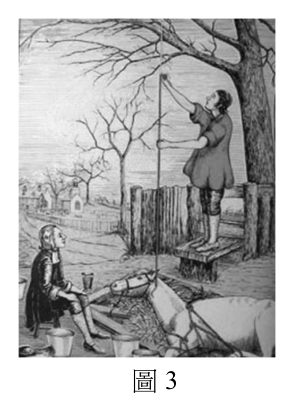
（A） 神經傳遞速度（B） 肌肉收縮頻率（C） 血壓（D） 心律變化
圖3答案：（C）
詳解與考點 正解：將一端開放於大氣的長玻璃管垂直插入動脈，血液上升到某一高度後，血柱的靜水壓會與動脈內壓力平衡。可由 P=ρgh 以血柱高度換算壓力，因此這個設計主要量得的是血壓，故選 C。
A：神經傳遞速度需量測刺激與反應的時間差，血柱高度不提供傳導時間。
B：肌肉收縮頻率要記錄收縮週期，與動脈內血液上升的平衡高度無關。
D：心律變化可造成血柱脈動，但這項裝置的主要可量化資料是平均壓力所對應的液柱高度。
本題考點：靜水壓（hydrostatic pressure）——液柱高度 h 可表示壓力差 P=ρgh；血壓量測（blood pressure measurement）——動脈壓能使液柱上升，直到重力造成的壓力平衡；實驗變因（experimental variable）——辨認裝置直接讀取的是高度，再推回它代表的生理量。
第 18 題
新型冠狀病毒(SARS-CoV-2)具有下列何種特性?
（A） 主導病毒感染的棘蛋白被包裹在病毒內側而未暴露於外（B） 屬於突變率高的DNA病毒,因此陸續發現不同的變異病毒株（C） 病毒會在細胞中複製並在完成組裝後,離開宿主細胞（D） 即使沒有感染宿主細胞也可自行大量複製,因而具高傳染性答案：（C）
詳解與考點 正解：SARS-CoV-2 必須進入宿主細胞，利用宿主的物質與能量完成核酸複製、蛋白質合成與病毒組裝，之後才離開細胞感染其他細胞。這符合（C）的描述。故選 C。
A：棘蛋白位於病毒包膜表面並向外突出，負責辨識宿主細胞受體；它不是被包在病毒內側的成分。
B：SARS-CoV-2 的遺傳物質是 RNA，不是 DNA；不同變異株的出現也不能把它分類為 DNA 病毒。
D：病毒缺乏獨立完成大量複製所需的細胞構造與代謝系統，未感染宿主細胞時不能自行大量複製。
本題考點：病毒增殖（viral replication）——病毒須在宿主細胞內複製與組裝；棘蛋白（spike protein）——判斷病毒附著與進入宿主時，找包膜表面的棘蛋白；RNA 病毒（RNA virus）——分類要看遺傳物質，不可由傳染性高低判定。
第 19 題
已知圖4 的甲玻片為蕨類的莖橫切,己玻片為單子葉植物莖的橫切面。下列有關圖4
玻片乙~戊的判斷,何者正確? 甲 乙 丙
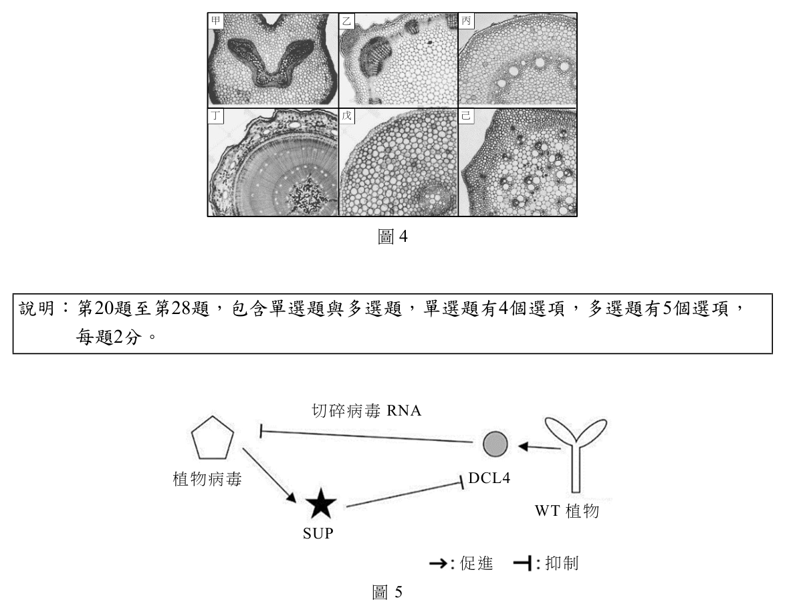
（A） 乙為雙子葉植物的莖（B） 乙、戊的玻片中找不到分生組織（C） 乙、丙構造中央的薄壁組織稱為皮層 丁 戊 己（D） 丙為雙子葉植物根
圖4答案：（A）
詳解與考點 正解：植物莖、根的橫切面分類，先看維管束的排列方式與中央組織。雙子葉莖的判準是維管束常呈環狀分布並保有中央髓部，這正是選項 A 將乙判為雙子葉植物莖所依據的解剖特徵，故選 A。
B：不能以「找不到分生組織」一概判定乙與戊；具有形成層的切面仍可能保有可分裂的組織。
C：構造中央的薄壁組織稱為髓，不是皮層；皮層位於表皮內側與維管組織外側。
D：雙子葉植物根的典型判準是中央放射狀的木質部與其間的韌皮部，丙不符合這個根部配置。
本題考點：維管束排列（vascular bundle arrangement）——雙子葉莖、單子葉莖與根要由維管組織的位置區分；髓與皮層（pith and cortex）——中央薄壁組織是髓，外圍薄壁組織才是皮層；形成層（cambium）——是否能次生生長取決於有無具分裂能力的形成層。
第 20 題
有關實驗一所顯示的結果,推測下列何者正確?
（A） 感染野生型病毒的株高較高（B） DCL4可能與葉的面積大小有關（C） DCL4對株高影響大（D） dcl4突變植株與WT植株的型態都不受野生型病毒感染影響答案：（B）
詳解與考點 正解：判讀基因功能時，須固定感染條件，比較 WT 與 dcl4 突變植株的葉面積；若差異隨 DCL4 狀態改變，才可支持 DCL4 可能與葉面積大小有關。依官方答案，這項推論對應（B），故選 B。
A：株高高低必須以相同宿主基因型的感染組與未感染組比較，不能由葉面積的比較直接推出。
C：宣稱 DCL4 對株高「影響大」還需要效果大小與組間比較，僅有是否不同不足以判定。
D：此敘述要求兩種植株在感染前後的型態都不變，是強的全稱判斷；須逐組確認後才可成立。
本題考點：基因型與表型（genotype and phenotype）——比較基因功能時要固定其他條件，觀察表型是否隨基因型改變；對照組（control group）——感染與未感染組須配對比較，才可歸因於感染處理；效果大小（effect size）——「有影響」與「影響大」需要不同程度的數據支持。
第 21 題
有關實驗二所顯示的結果,推測下列何者正確?
（A） WT植株對sup突變病毒具有抗性（B） 病毒的SUP無法抑制植物的DCL4活性（C） 植物的DCL4可直接抑制SUP活性（D） sup突變病毒感染WT植株可造成嚴重病徵答案：（A）
詳解與考點 正解：植物是否對病毒具抗性，須比較 WT 植株受 sup 突變病毒感染後的表型與未感染對照；若感染後仍維持近似正常的生長，才支持具有抗性。依官方答案，符合這個判準的是（A），故選 A。
B：SUP 是否抑制 DCL4，需要量測 DCL4 活性或能直接辨識其抑制作用的證據；僅由整體病徵不能推出這個分子結論。
C：DCL4 可否直接抑制 SUP，必須有兩者直接作用的實驗支持；植物表型差異本身不足以證明直接性。
D：是否造成嚴重病徵要在相同宿主基因型下比較不同病毒，並以未感染組作基準，不能只由感染一組下結論。
本題考點：抗性（resistance）——以感染後表型相對於未感染對照是否維持為判準；病毒突變（viral mutation）——比較病毒基因功能時須固定宿主基因型；直接證據（direct evidence）——表型關聯不能自動推成分子間的直接抑制。
第 22 題（多選）
科學家針對這些數據做出結論,下列哪些是合理的?
（A） DCL4是植物抵抗病毒的重要防禦蛋白（B） dcl4突變植株可以抵抗sup突變病毒（C） sup突變病毒一樣可以抵抗DCL4的攻擊（D） SUP基因的有無是病毒成功感染植物的關鍵之一（E） sup突變病毒會造成dcl4突變植株的株高及葉面積改變答案：（A）（D）（E）
詳解與考點 正解：判準是將植物基因型、病毒是否帶有 SUP，以及感染後的病毒量或表型做交叉比較；只有對照結果能決定哪些結論合理。依官方答案鍵，故選 ADE。本題把握度低，因為這類因果判斷不能僅由 DCL4、SUP 的名稱或單一組別下結論。
A：要支持 DCL4 是植物抗病毒的重要防禦蛋白，應比較有無 DCL4 時的感染結果，並確認其他條件相同。
D：要判定 SUP 基因是否為感染成功的關鍵之一，須比較帶有與缺少 SUP 的病毒在相同宿主背景下的感染差異。
E：株高與葉面積的改變必須以 dcl4 植株感染 sup 突變病毒後的表型，與適當的未感染或不同病毒對照比較。
B：宿主 dcl4 突變是否能抵抗 sup 突變病毒，須以該組感染率、病毒量或症狀與控制組比較；不能由基因名稱直接推出宿主具有抵抗力。
C：病毒能否抵抗 DCL4 的攻擊，必須比較同一病毒在 DCL4 正常與缺失宿主中的表現；病毒具有突變不等於已證實逃避防禦。
本題考點：基因型交叉對照（genotype-by-genotype comparison）——同時改變宿主與病原基因時，要以完整交叉組合分辨各自作用；抗病毒 RNA 沉默（antiviral RNA silencing）——判定防禦蛋白功能時，比較防禦基因存在與缺失下的感染結果；因果推論（causal inference）——表型差異須有對照組，才可歸因於指定基因或病毒因子。
第 23 題（多選）
根據文章所描述之分子調控機制的實驗給果,可證明下列哪些現象?
（A） 干擾素可以促使細胞產生磷酸化的抗體來參與抗病毒機制（B） HBP21也是一種引起抗病毒機制的作用分子（C） HBP21可以引起IRF3去活性以引起抗病毒機制（D） HBP21可以引起IFN的蛋白質磷酸化而激發抗病毒機制（E） 病毒感染的細胞有大量IFN mRNA表現答案：（B）（E）
詳解與考點 正解：抗病毒訊號鏈的方向是 HBP21 促進 IRF3 磷酸化與活化，活化的 IRF3 進入細胞核後促進 IFN 的 mRNA 表現；因此 HBP21 是參與抗病毒機制的作用分子，病毒感染的細胞可出現較多 IFN mRNA。故選 BE。
B：HBP21 位於促進 IRF3 活化與 IFN 表現的上游，故可視為引起抗病毒反應的調控分子。
E：IRF3 活化後促進 IFN 基因轉錄，故病毒感染所啟動的此路徑會提高 IFN mRNA 表現。
A：抗體由 B 細胞等免疫細胞製造，且磷酸化通常是蛋白質的修飾方式，不能稱為「磷酸化的抗體」。
C：此訊號路徑需要 IRF3 被磷酸化而活化；去活性與促進 IFN 表現的方向相反。
D：題述的磷酸化標的為 IRF3 與 HBP21，IFN 的增加是轉錄表現結果，不是 IFN 蛋白質被磷酸化。
本題考點：干擾素（interferon，IFN）——病毒感染後常由轉錄調控提高其 mRNA 表現；轉錄因子（transcription factor）——活化後進入細胞核並調控基因表現；磷酸化（phosphorylation）——判斷時要分清楚被修飾的蛋白質與下游被誘發表現的基因。
第 24 題
西方墨點法為利用抗體偵測所對應蛋白質表現量的一種技術,所呈現的帶狀訊號與其
表現量有正關聯性。科學家利用RNA 干擾技術將未感染細胞與病毒感染細胞中的
HBP21 進行基因默化使該蛋白不再表現後,觀測磷酸化IRF3、IFN 以及病毒蛋白質的
表現(+表示HBP21 正常表現;—表示HBP21 因為基因默化而無法表現)。下列哪一
圖示結果符合上文敘述?
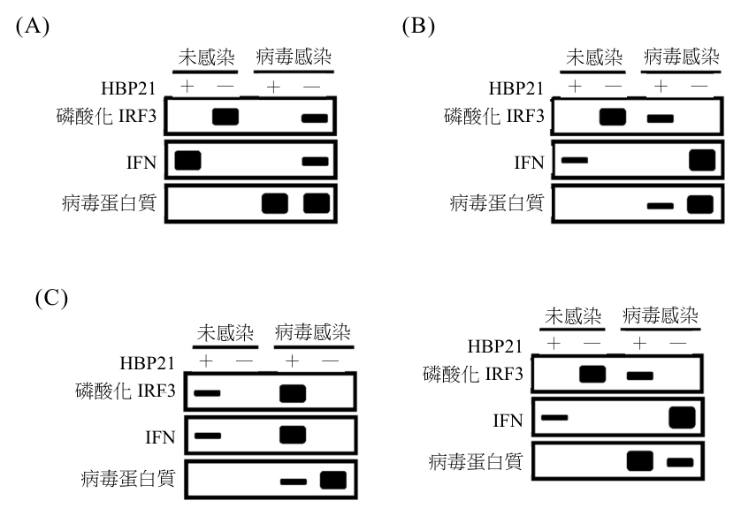
（A） （B） 未感染 病毒感染 未感染 病毒感染
HBP21 + — + — HBP21 + — + —
磷酸化IRF3 磷酸化IRF3
IFN IFN
病毒蛋白質 病毒蛋白質（C） （D） 未感染 病毒感染 未感染 病毒感染
HBP21 + — + — HBP21 + — + —
磷酸化IRF3 磷酸化IRF3
IFN IFN
病毒蛋白質 病毒蛋白質答案：（C）
詳解與考點 正解：判讀這類西方墨點結果時，先確認 HBP21 在「+」欄存在、在「−」欄消失，這是基因默化是否成功的控制；再只在病毒感染欄中比較磷酸化 IRF3、IFN 與病毒蛋白質。若 HBP21 促進抗病毒路徑，敲低後磷酸化 IRF3 與 IFN 應同向改變，病毒蛋白質則應呈相反的感染結果；若 HBP21 抑制路徑，三者的方向則相反。符合題目作答鍵所對應一致關係的是 C，故選 C。HBP21 對路徑的促進或抑制角色必須由題幹前提指定，單靠實驗設計不會自動決定帶狀變化方向。
A、B、D：任一圖示若未先顯示 HBP21 基因默化成功，或讓感染狀態、IRF3 磷酸化、IFN 與病毒蛋白質之間的變化無法形成一致因果鏈，就不能僅以單一帶狀訊號判定成立。
本題考點：RNA 干擾（RNA interference）——比較「+」與「−」前，要先把目標蛋白的敲低視為實驗操弄是否成功的控制；西方墨點法（Western blotting）——帶狀訊號強弱代表目標蛋白的相對表現量；抗病毒訊號傳遞（antiviral signaling）——IRF3 磷酸化、IFN 與病毒量的關係需放在同一感染條件內判讀。
第 26 題
下列有關古典制約反射的敘述,何者正確?
（A） 非制約刺激能引發非制約反應,且不用經過訓練（B） 正常情形下,制約刺激可引發動物非制約反應,且不用經過訓練（C） 訓練的過程中,必須隨機的重複給予動物多次的制約或非制約刺激（D） 制約刺激與非制約刺激必須具有同質性,都是屬視覺或屬聽覺刺激答案：（A）
詳解與考點 正解：古典制約先利用本來就能引發反應的非制約刺激，再與原本中性的刺激反覆配對。非制約刺激不必經過訓練就能引發非制約反應，因此（A）正確。故選 A。
B：正常情形下，制約刺激在訓練前只是中性刺激；經配對訓練後，它引發的是制約反應，不是非制約反應。
C：訓練需要制約刺激與非制約刺激在時間上具有可建立關聯的配對關係，隨機給予不能有效形成制約。
D：兩種刺激不必同屬視覺或聽覺；能否建立時間上的關聯，比感覺模態是否相同更重要。
本題考點：非制約刺激（unconditioned stimulus，US）——未經訓練即可引發反應；制約刺激（conditioned stimulus，CS）——由原本中性刺激經配對後取得引發反應的能力；古典制約（classical conditioning）——判斷成立與否時，看刺激是否有適當的反覆配對。
第 27 題
依據上文的敘述,下列何種因素可能會是以哺乳動物為模式來研究制約反射的細胞機
轉時,可能遇到的困境?
（A） 哺乳動物中參與特定行為的神經迴路很難清楚的被鑑定出（B） 哺乳類的中樞神經細胞太小而無法被記錄（C） 基因轉殖與遺傳學的研究方法無法運用在哺乳動物（D） 古典制約反射學習很難在哺乳動物訓練答案：（A）
詳解與考點 正解：以哺乳動物研究特定學習行為時，主要困境是神經系統龐大、細胞類型與連結繁複，難以完整而精確地鑑定出與單一行為對應的神經迴路。這正符合（A），故選 A。
B：哺乳類中樞神經細胞雖小，仍可用電生理、影像或其他方法記錄其活動；困難不在於完全無法記錄。
C：基因轉殖與遺傳學方法可運用於哺乳動物，反而是研究特定神經細胞與行為關係的重要工具。
D：哺乳動物能形成古典制約反射；訓練可行，不是以哺乳動物為模式的根本限制。
本題考點：神經迴路（neural circuit）——研究行為機制時要連結特定細胞、連線與行為輸出；模式動物（model organism）——選擇時比較神經系統複雜度與可操作性；古典制約（classical conditioning）——能否訓練與能否精確解析其細胞機制是不同問題。
第 29 題
若想試驗逆境是否造成豆苗的光合作用機制受損,應該可以進行下列哪一實驗?
（A） 以濾紙色層分析法檢視逆境下的豆苗,是否含有葉綠素a（B） 以濾紙色層分析法比較正常生長與逆境生長的豆苗,逆境組的葉綠素a之Rf值是否
變小（C） 分離逆境生長豆苗的葉綠體,加入DCPIP一段時間後,上清液是否變無色（D） 比較正常生長與逆境生長豆苗的葉綠體粗萃取液加入DCPIP一段時間後,逆境組上
清液顏色是否較深答案：（D）
詳解與考點 正解：要檢驗逆境是否損害光合作用機制，須把正常組與逆境組的葉綠體在相同條件下比較電子傳遞能力。DCPIP 的氧化態有顏色，接受光反應提供的電子後會褪色；逆境組若電子傳遞受損，還原較少，顏色會較深。故選 D。
A：只檢視逆境組是否含葉綠素 a，只能知道色素是否存在，不能和正常機制比較而判定功能是否受損。
B：Rf 值反映色素在固定條件下的遷移特性，不是葉綠素量或光反應效率的直接指標；同一色素不會因組別不同就應有較小 Rf 值。
C：單看逆境組的 DCPIP 是否褪色，缺少正常組作為基準，無法判定褪色程度是否因逆境而降低。
本題考點：光反應（light reaction）——判斷受損時可檢測電子傳遞能力；DCPIP——作為人工電子受體，褪色代表被還原；實驗對照（experimental control）——要歸因於逆境，正常組與逆境組必須在相同條件下比較。
第 30 題
某生將一個馬鈴薯切割成三塊形狀與體積皆相同的立方體後,再以
氣
雙氧水來測量甲、乙、丙三組實驗馬鈴薯的過氧化氫酶活性,結果 體
如圖7 所示。下列敘述何者正確? 產
生
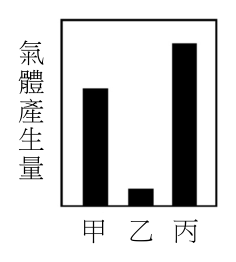
（A） 若甲組是在25°C進行反應,則乙組可能是在30°C進行反應 量（B） 若乙組是在pH4進行反應,那丙組可能是在pH7進行反應
甲乙丙（C） 若甲組是加入1份量的雙氧水,那乙組可能是加入3份量的雙氧水
圖7（D） 本實驗所產生的氣體為CO2答案：（B）
詳解與考點 正解：馬鈴薯中的過氧化氫酶會催化雙氧水分解，產生的氣體是 O2；酶活性又受 pH 影響。若乙組在 pH 4，丙組在 pH 7，酸鹼度不同可使酶的活性與圖示氣體產生量不同，這與題圖的比較關係相容，故選 B。
A：25°C 與 30°C 哪一組產氣較多，還取決於酶的最適溫度與反應時間，不能只憑兩個溫度直接對應圖示結果。
C：增加雙氧水份量不必然等比例增加量到的氣體；酶量、反應時間與是否已達飽和都必須控制。
D：過氧化氫酶催化的是 2H2O2→2H2O+O2，產生的是氧氣而不是 CO2。
本題考點：酶活性（enzyme activity）——pH 會改變活性部位的狀態，進而影響反應速率；過氧化氫酶（catalase）——分解雙氧水時以 O2 產量作為反應指標；控制變因（controlled variables）——比較單一因子時，酶量、底物濃度與反應時間要保持一致。
第 31 題
根據心臟解剖圖(如圖8),下列敘述何者正確? 上大靜脈
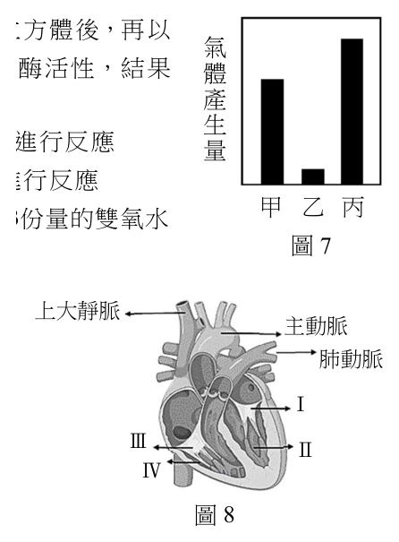
（A） 三尖瓣膜(III)可防充氧血逆流回右心房 主動脈
肺動脈（B） 將水灌入上下大靜脈,水從左心房流入左心室（C） 將水灌入肺動脈,水會從右心房流入右心室(IV) I
III（D） 因為要將血液打入主動脈送至全身,左心室(II) II
IV
肌肉壁厚度大於右心室
圖8答案：（D）
詳解與考點 正解：左心室要把血液送入主動脈，再經全身循環回流；全身循環阻力大，所需壓力也較高，因此左心室的肌肉壁比右心室厚，故選 D。
A：三尖瓣位於右心房與右心室之間，防止的是右心室收縮時缺氧血回流至右心房，不是充氧血。
B：上下大靜脈回流的是右心房，灌入其中的水會經三尖瓣進右心室，不會直接進左心房與左心室。
C：肺動脈瓣使血液由右心室流向肺動脈；從肺動脈反向灌水會受瓣膜阻擋，不能依正常血流路徑回到右心房再進右心室。
本題考點：心臟血流方向（cardiac blood flow）——靜脈回右心房、肺靜脈回左心房，勿以血管名稱代替流向；房室瓣與半月瓣（atrioventricular and semilunar valves）——瓣膜維持單向流動；心室壁厚度（ventricular wall thickness）——泵送阻力較大的全身循環者需要較厚肌壁。
第 32 題
下列有關圖中甲、乙肌肉的敘述,何者正確?
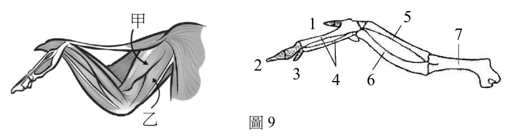
（A） 甲、乙為振翅使用的主要肌肉,雞飛行力不佳,故此兩塊肌肉不如其他鳥類發達（B） 甲、乙兩肌肉同時收縮時,雞的翅膀收疊至最短（C） 甲兩端的肌腱分別與骨骼5及骨骼7連接,甲收縮時可使翅彎曲（D） 乙兩端的肌腱與骨骼7的近端及遠端連接,乙收縮時翅伸直答案：（C）
詳解與考點 正解：骨骼肌只能牽拉、不能主動推動骨骼；跨過關節連接骨骼 5 與骨骼 7 的甲肌收縮時，兩端距離縮短，會使關節彎曲。這正符合甲的肌腱連接位置與動作方向，故選 C。
A：振翅的主要動力來自胸部的大型飛行肌，圖示甲、乙是調節翅部關節位置的肌肉，不能由雞飛行力較弱推論兩者一定不發達。
B：拮抗肌同時收縮通常使關節穩定或提高張力，不會使翅膀自動收疊到最短。
D：若乙的兩端都連在骨骼 7 的近端與遠端，收縮不會使骨骼 7 相對相鄰骨骼產生伸直轉動。
本題考點：骨骼肌收縮（skeletal muscle contraction）——肌肉收縮只會拉近兩個附著點；拮抗作用（antagonistic action）——屈肌與伸肌通常在同一關節產生相反轉動；肌腱附著（tendon attachment）——判斷動作時先找肌腱是否跨越該關節。
第 33 題
雞翅與人的手臂同屬前肢,骨骼4 的部位與人類前肢哪一個構造為同源關係?
（A） 下臂（B） 手掌（C） 手指（D） 此為鳥類特有,人類無同源構造答案：（B）
詳解與考點 正解：四足動物前肢雖因飛行、抓握等功能而外形不同，骨骼仍可依由近到遠的基本序列對應。依題目標號在此序列中的同源配對，骨骼 4 對應人類的掌部骨群，故選 B。
A：下臂對應的是肱骨遠端之後的橈骨與尺骨區域，並非骨骼 4 所屬的掌部骨群。
C：手指對應最末端的指骨，位於掌骨的遠側，不是骨骼 4 的同源配對。
D：鳥翅與人手同為脊椎動物前肢，保留共同祖先的骨骼基本配置，並非鳥類獨有而無人類同源構造。
本題考點：同源構造（homologous structures）——共同祖先的骨骼可因功能不同而改變外形，位置與連接關係仍可對應；四足動物前肢（tetrapod forelimb）——由近到遠依序辨認上臂、前臂、手掌與手指；適應輻射（adaptive radiation）——功能差異不會取消同源關係。
腎臟是人體的排泄器官,腎動脈的血液由入球小動脈進入絲球體的微血管,血液中的 小分子可在此經由過濾作用進入腎小 絲球體微血管
管的鮑氏囊中形成過濾液。過濾液中有
用物質會被再吸收回體內,進入圍繞在 物質甲 物質乙 物質丙 物質丁 鮑氏囊 管周微血管
腎小管周圍的微血管,血液中過多或有
害的物質則會被腎小管分泌至濾液中, 尿液 尿液 尿液 尿液 最後形成尿液排泄出體外(圖10)。 圖10
第 34 題
根據圖10 所示,下列有關物質甲~丁的敘述,何者正確?
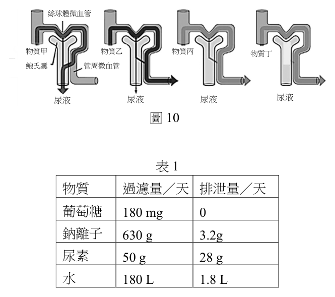
（A） 物質甲少量經過濾,其他被分泌至尿液
表1（B） 物質乙被過濾後完全被再吸收（C） 物質丙被過濾,部分被再吸收 物質 過濾量/天排泄量/天（D） 物質丁被過濾,但不被分泌 葡萄糖 180 mg 0
鈉離子 630 g 3.2g答案：（A）
詳解與考點 正解：腎臟處理物質時，過濾是由絲球體微血管進入鮑氏囊，分泌則由腎小管周圍微血管進入腎小管；兩條路徑都會把物質加入最後的尿液。選項 A 所述的物質甲同時有少量過濾與其餘分泌，符合這兩種流向相加的原理，故選 A。
B：完全再吸收的物質應呈現「有過濾量、排泄量為 0」的關係，不能只因物質曾被過濾就指定為乙。
C：部分再吸收必須同時符合排泄量小於過濾量且仍有排出；丙的路徑不符合這個流向判準。
D：僅說被過濾而不被分泌，沒有對應丁所示的物質移動方向，忽略了腎小管分泌的可能性。
本題考點：腎絲球過濾（glomerular filtration）——小分子由血液進入鮑氏囊形成濾液；腎小管再吸收與分泌（tubular reabsorption and secretion）——再吸收回到血液，分泌則由血液加入腎小管；物質平衡（renal mass balance）——排泄量可由過濾、再吸收與分泌三者的方向判讀。
第 35 題
物質丙最可能是表1 中的哪一物質?
（A） 水（B） 尿素 尿素 50 g 28 g（C） 鈉離子（D） 葡萄糖 水 180 L 1.8 L答案：（D）
詳解與考點 正解：判準是物質是否可被濾過後又幾乎完全由腎小管回收。葡萄糖屬小分子，可先進入鮑氏囊的過濾液，隨後主要被腎小管再吸收至周圍微血管；這種在過濾液中可見、最終尿液中極少的處理型態符合（D）葡萄糖，故選 D。
A：水也會被濾過並大量再吸收，但它仍是尿液的主要成分，不能以葡萄糖近乎完全再吸收的特徵辨認。
B：尿素是代謝廢物，雖可能伴隨再吸收與分泌，仍有相當部分隨尿液排出，與葡萄糖的處理方式不同。
C：鈉離子的再吸收受體液平衡調節，尿液中仍會有排出量；它不具有正常情況下葡萄糖幾乎不出現在尿液中的特徵。
本題考點：腎絲球濾過（glomerular filtration）——血液中的小分子可進入鮑氏囊形成過濾液；腎小管再吸收（tubular reabsorption）——身體需要的物質會由濾液回到管周微血管，判題時要分清楚「進入濾液」與「最後排出」；尿液形成（urine formation）——比較同一物質在血液、過濾液與尿液中的去向，可判斷其被保留或排除。
人面蜘蛛是常見的捕食者,雌蜘蛛會停留蛛網中間,等待昆蟲自投羅網。人面蜘蛛除 了背面的「人面」是引人注目
黃斑型 藍斑型 集中黃斑型 全身黃化型 全身黑化型
的焦點,牠們腹部的斑紋也非
常引人注目。腹面除了末端有
個紅色的圓點外,全部的斑紋
都是鮮黃色的。已知昆蟲的視
覺對紅色不敏感,黃色才是昆 圖11
蟲視覺上比較吸睛的光譜。於是研究 日間的實驗結果 夜間的實驗結果
者製作五種不同腹面顏色或斑紋類 0.3 每 每
型的紙型蜘蛛(圖11),接著在樹林 小 小
時 時 0.2
找到織好的網,將紙型蜘蛛取代停在 捕 捕
食 食
0.1 網中的人面蜘蛛,連續固定時間錄影 隻 隻
數 數
後,分析影像以計數落網的蟲子隻數
0.0 0.0
(圖12)。根據本文回答36-37 題。 集中 藍斑黃斑空網 集中 藍斑黑化黃斑 黃化空網 黃斑 黃斑
圖12
111年分科 第 10 頁
生物考科 共 11 頁
第 36 題（多選）
根據圖12 的實驗結果顯示,下列哪些正確?
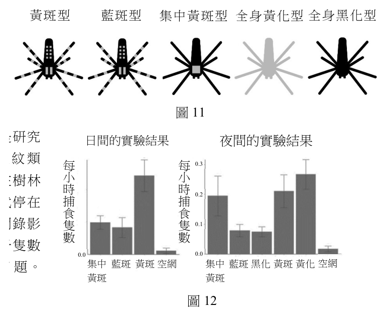
（A） 人面蜘蛛不在網上等待,捕食效果較佳（B） 黃斑型紙型蜘蛛可模擬出真正的蜘蛛（C） 顏色決定紙型蜘蛛對夜間飛蟲的吸引力,相較斑紋形式顯著（D） 蜘蛛的獵物對藍色敏感（E） 蜘蛛腳上的黃色斑點可能有助於日間吸引飛蟲答案：（B）（C）（E）
詳解與考點 正解：判準是紙型蜘蛛是否能在不同光照條件下重現腹面色彩與斑紋對飛蟲落網的效果。題組操弄的是紙型的顏色與斑紋，符合實驗比較結論的是（B）、（C）、（E），故選 BCE。
B：黃斑型紙型蜘蛛能作為真實人面蜘蛛腹面特徵的模擬組；它保留研究要比較的黃色斑紋，讓捕食效果可與其他紙型處理組對照。
C：夜間的比較把顏色與斑紋形式分開檢驗；在該條件下，顏色是較能區分紙型蜘蛛吸引飛蟲效果的因素，故此敘述成立。
E：日間若黃色斑點組的效果較能提高落網數，便支持黃色腳斑可能具有吸引飛蟲的功能；「可能」保留了實驗只檢驗效果、未直接測量感覺機制的界線。
A：紙型取代真蜘蛛的設計是在檢驗視覺訊號，不能據此推論真蜘蛛不在網上等待會有較佳捕食效果；等待行為並不是本實驗所操弄的變因。
D：比較不同紙型的捕食結果，不能直接測得獵物對藍色的感覺敏感度；分辨關鍵在吸引效果，不在視覺受器對特定波長的神經反應。
本題考點：操弄變因與依變項（independent and dependent variables）——先找研究者改變的是顏色或斑紋，再以落網昆蟲數判斷效果；模型生物與對照（experimental model and control）——紙型可隔離外觀訊號，但不能外推真蜘蛛未被操弄的行為；相關與機制（effect versus mechanism）——觀察到捕食差異不等於已直接證明獵物的感覺機制。
第 37 題
根據本文研究者未將腹面紅色的斑點加入實驗的觀察與分析中,其合理推測的原因為
何?(2 分)
本題選項為上圖中的 A／B／C／D，請對照圖片作答。
標準答案未收錄
詳解與考點 正解：關鍵線索是題組已說明昆蟲視覺對紅色不敏感，而研究的依變項是落網飛蟲數。腹面末端的紅色圓點預期不會有效改變昆蟲的視覺吸引或捕食效果；把它納入處理組也難提供有意義的比較，因此研究者將操弄集中在黃色的色彩與斑紋。故答案為昆蟲對紅色不敏感，紅色斑點預期不影響吸引飛蟲的效果。
本題考點：感覺訊號與行為反應（sensory cue and behavioral response）——先確認受測生物能否感受該顏色，再判斷色彩是否可能影響行為；實驗變因篩選（variable selection）——預期不影響依變項的特徵不宜作為主要處理變因，避免增加無效比較。
接種促進植物生長之根部細菌,可抵抗或緩和乾旱及鹽害逆境對植物生長的衝擊。科
學家找出TPP412 及PS3 兩株菌可緩解水稻秧苗鹽害逆境,並且發現TPP412 菌株具有可 參與生合成吲哚-3-乙酸(IAA)的醛脫氫酶(ALDH)。因此TPP412 菌株在特定條件下可 生產植物激素 IAA,促進水稻根系發育。圖13 是接種不同菌株的植物在0 mM NaCl 及100 mM NaCl 環境下的數據。請依據圖13 數據回答第38-39 題。
12 200
6 100 根長度(cm) 基因表現量(FPKM)
ALDH
0 0
0 mM NaCl 100 mM NaCl 0 mM NaCl 100 mM NaCl 圖13
第 38 題（多選）
根據上文及實驗結果,下列敘述哪些正確?
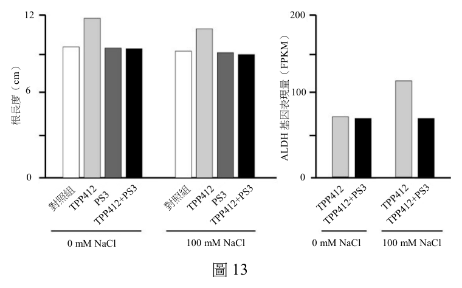
（A） 接種TPP412的植物中,ALDH基因受鹽害逆境誘導（B） PS3菌株不會抑制TPP412菌株對水稻根系發展（C） 在鹽害逆境下,PS3菌株抑制TPP412菌株的ALDH基因表現（D） 在鹽害逆境下,TPP412菌株不會增加IAA含量（E） 在0 mM NaCl下,TPP412 + PS3組的IAA濃度與TPP412組一樣答案：（A）（C）
詳解與考點 正解：關鍵在把鹽害、有無TPP412、PS3與ALDH、IAA之間的因果鏈連起來。TPP412具有參與IAA生合成的ALDH，在鹽害條件下其ALDH表現可被誘導；與PS3併用時，PS3會抑制這一表現。因此（A）、（C）成立，故選 AC。
A：比較不同NaCl條件下接種TPP412的組別，可判斷ALDH表現在鹽害逆境下提高，符合鹽害誘導的敘述。
C：在鹽害下，TPP412與PS3併用時的ALDH表現受到抑制；這會削弱TPP412經由ALDH參與IAA生合成的途徑。
B：若PS3不會抑制TPP412對根系的促進，併用組應保有TPP412的根系優勢；題組的比較不支持這個推論。
D：TPP412具有參與IAA生合成的ALDH，鹽害下的表現變化正是判斷IAA增加與否的線索，不能說它不會增加IAA含量。
E：未受鹽害時，併用PS3仍可能改變TPP412相關的IAA效果；不能把兩組直接視為濃度完全相同。
本題考點：基因表現與表型（gene expression and phenotype）——將基因表現量的變化連到代謝物與根長時，要確認中間機轉是否一致；生物交互作用（biological interaction）——兩菌併用的效果不能由各自效果相加推定，須直接比較併用組；逆境誘導（stress induction）——比較有無逆境的同一處理組，才能判斷基因是否受逆境誘導。
第 39 題
寫出哪一菌株對水稻抗鹽害逆境最有幫助?(1 分)在鹽害逆境下,TPP412 + PS3 組與
對照組的水稻根系相近的原因為何?(3 分)
本題選項為上圖中的 A／B／C／D，請對照圖片作答。
標準答案未收錄
詳解與考點 正解：判準是抗鹽害效果要看鹽害條件下根系是否維持生長，並追溯到IAA生成的機轉。TPP412對水稻抗鹽害逆境最有幫助；其ALDH參與IAA生成，可促進根系發育。TPP412與PS3併用時，PS3抑制TPP412的ALDH表現，IAA生成降低，根系便接近對照組。故答案為TPP412；PS3在鹽害下抑制TPP412的ALDH表現，降低IAA生成，故根系接近對照組。
本題考點：植物生長素IAA（indole-3-acetic acid）——判讀根系生長差異時，連結IAA是否能被生合成與累積；鹽害逆境（salt stress）——比較抗逆境能力要以受鹽害條件下的表型為準，不能只看正常條件；微生物交互作用（microbial interaction）——併用菌株若抑制關鍵酶的表現，可能抵銷原本的促生長效果。
某生利用課餘到實驗室參與研究小分子Y 對於人類癌細胞株(HeLa)增生作用的影響。 該生收集增生中的HeLa 細胞後,以5 M 小分子Y 處理,約1 小時 20 後分析兩端中心體距離(如圖14)。 兩 15
端
第 40 題
根據圖14 所示,小分子Y 可能影響有絲分裂過程中的哪種結 中
10
構?(2 分) 心
體
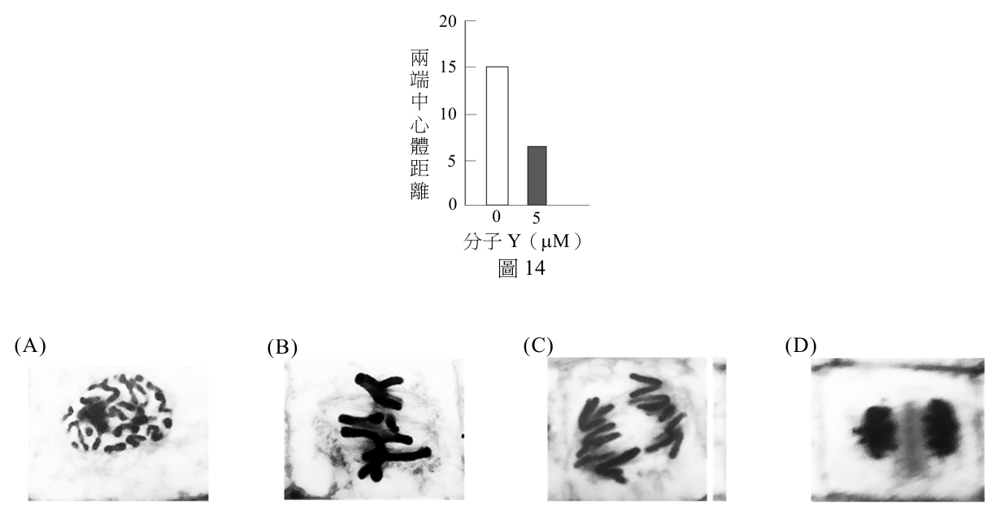
本題選項為上圖中的 A／B／C／D，請對照圖片作答。
標準答案未收錄
詳解與考點 正解：兩端中心體距離是紡錘體建立過程的直接讀值。中心體彼此分離與移動主要依賴微管及其相關馬達蛋白產生的力，因此小分子 Y 若使此距離異常，最直接的候選結構是微管所組成的紡錘體，故選「微管」。題目可能要求的作答層級是「微管」或「紡錘體」，兩者的命名範圍不同，故此機轉判定仍有不確定性。
本題考點：中心體分離（centrosome separation）——有絲分裂前兩個中心體須分開，才能建立雙極紡錘體；紡錘體微管（spindle microtubules）——微管與馬達蛋白提供推拉力量，改變其功能會影響兩極距離；有絲分裂（mitosis）——判斷藥物作用點時，應從被量測的細胞結構回推最直接的機制。
第 41 題
該生將洋蔥根尖組織浸泡於含有5 M 小分子Y 的培養液一小時 距 5
離
後,進行組織切片和染色,並在光學顯微鏡下分析對照組和實驗 0
0 5
組根尖細胞內出現以下四種染色體構造的比例,試問實驗組中哪 分子Y(M)
一種染色體構造的比例最高? 圖14
（A） （B） （C） （D） 42-44 題為題組
圖15 是複製中的DNA 示意圖,請回答第42-44 題。答案：（A）
詳解與考點 正解：關鍵在小分子 Y 會使兩端中心體距離異常，這指向中心體分離或紡錘體組裝受阻。當紡錘體未能正常形成，細胞較可能累積於尚未建立穩定赤道板排列的分裂狀態；與此機轉相符的（A）為正解，故選 A。中心體異常可對應前期或前中期的不同構造，故這個由機轉得到的判定仍有不確定性。
B、C、D：判別染色體構造時，重點是是否仍可見正常的紡錘體依賴性排列或已完成姐妹染色分體分離；這些狀態都不能解釋中心體分離受阻造成的累積。
本題考點：紡錘體組裝（spindle assembly）——中心體分離受阻會妨礙雙極紡錘體形成，細胞因而停留在早期分裂狀態；染色體排列（chromosome alignment）——中期赤道板排列需要兩極紡錘絲的拉力平衡，未建立前不能視為正常中期；細胞週期停滯（cell-cycle arrest）——比較處理組與對照組的構造比例時，要從累積在哪個階段判定受影響的機制。
圖15 是複製中的DNA 示意圖,請回答第42-44 題。
第 42 題
A 片段為何物?(1 分)說明其功能。(2 分) C 股
D 股
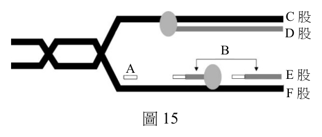
本題選項為上圖中的 A／B／C／D，請對照圖片作答。
標準答案未收錄
詳解與考點 正解：A片段是RNA引子（RNA primer）。DNA聚合酶無法從零開始合成DNA，必須接在引子提供的自由3′端之後延長；引子先由引子酶合成，之後再由DNA聚合酶延伸形成新股。故答案為RNA引子；提供DNA聚合酶延長所需的3′端以啟動DNA合成。
本題考點：RNA引子（RNA primer）——看到DNA新股起始處時，先判斷是否需要一段提供自由3′端的RNA；DNA聚合酶的起始限制（DNA polymerase initiation）——DNA聚合酶只能延長既有核酸鏈，不能自行從頭建立第一個核苷酸鍵。
第 43 題
B 所指片段,稱為什麼?(1 分)說明為何領
B
先股DNA 複製時沒有B 片段?(2 分) A E 股
本題選項為上圖中的 A／B／C／D，請對照圖片作答。
標準答案未收錄
詳解與考點 正解：B所指片段是岡崎片段（Okazaki fragment）。DNA聚合酶只能沿新股5′→3′方向延長；在領先股上，模板方向讓新股可朝複製叉前進而連續合成，因此不需要反覆重新起始，也就不形成岡崎片段。故答案為岡崎片段；領先股可沿複製叉方向連續合成，故不形成岡崎片段。
本題考點：DNA合成方向（DNA synthesis directionality）——DNA聚合酶一律使新股由5′端延伸到3′端，再以模板方向判斷是哪一股；領先股與落後股（leading and lagging strands）——可隨複製叉連續合成的是領先股，必須分段合成並再接合的是落後股。
第 44 題
依據梅舍生與史塔爾的 DNA 複製實驗結 F 股
果,請問15N 同位素會落在C、D、E、F 哪些 圖15
股?(2 分)
本題選項為上圖中的 A／B／C／D，請對照圖片作答。
標準答案未收錄
詳解與考點 正解：判準是 DNA 的半保留複製。原先在 15N 培養基形成的兩條親代鏈保留 15N；每一條親代鏈各與一條新合成的 14N 鏈配對，因此 15N 只會落在兩條親代鏈上，不會進入新生鏈，故選親代鏈所對應的兩股。C、D、E、F 的實際字母位置決定答案組合，故此處只能確定兩條親代鏈的判準，仍有不確定性。
本題考點：半保留複製（semiconservative replication）——每個子 DNA 分子各保有一條親代鏈與一條新生鏈；同位素示蹤（isotope tracing）——15N 標記的是原有 DNA 的含氮鹼基，新生鏈的標記取決於複製時的培養基；複製叉（replication fork）——辨識各股時要先區分模板鏈與新合成鏈，再判斷標記去向。
胰臟具有α 及β 兩種內分泌細胞,其中α 細胞分泌升糖素,β 細胞則分泌胰島素。胰 島素的分泌直接受到血糖濃度的調控。科學家發現,β 細胞可感知周邊環境的葡萄糖。當 葡萄糖濃度超過閥值時,β 細胞會開始進行分泌活動。反之葡萄糖濃度低於閥值時,β 細胞 則停止分泌。β 細胞在分泌胰島素時,也會同時分泌另一種名為澱粉素(amylin)的激素, 此激素會抑制升糖素的分泌,但注射能與澱粉素結合的抗體後,澱粉素與其受體的結合會 被完全阻斷,在沒有澱粉素作用的情況下,α 細胞則會持續分泌升糖素。請根據所學知識 及以上所提供的資訊來回答45-47 題。
第 45 題
胰島素和升糖素對肝細胞內肝醣(糖)的作用分別為何?(2 分)
標準答案未收錄
詳解與考點 正解：血糖升高時，胰島素促進肝細胞將葡萄糖合成肝醣並抑制肝醣分解；血糖偏低時，升糖素促進肝醣分解釋出葡萄糖，並抑制肝醣合成。兩者對肝醣代謝方向相反，共同維持血糖穩定。故答案為胰島素促進肝醣合成；升糖素促進肝醣分解。
本題考點：血糖恆定（blood glucose homeostasis）——血糖偏高時看胰島素是否促進儲存，偏低時看升糖素是否動員肝醣；肝醣代謝（glycogen metabolism）——分辨「合成肝醣」與「分解肝醣」的方向，再連回血糖上升或下降。
第 46 題
在第一型糖尿病患中,有些是因自體免疫使得β 細胞死亡,造成胰島素分泌機能低下。
在沒有使用藥物或人工施打胰島素的情況下,這些患者飯後半小時血糖的濃度及血液
中升糖素的濃度和正常人有何不同?(2 分)
標準答案未收錄
詳解與考點 正解：關鍵是第一型糖尿病的β細胞死亡同時使胰島素與澱粉素分泌不足。飯後缺乏胰島素，葡萄糖攝取、利用與肝醣合成受限，所以血糖濃度較正常人高；又因澱粉素不能抑制α細胞，升糖素濃度亦較正常人高。故答案為飯後血糖較高，升糖素濃度也較高。
本題考點：第一型糖尿病（type 1 diabetes mellitus）——由β細胞功能不足判斷胰島素缺乏，再推血糖無法有效下降；胰島素與升糖素的拮抗（insulin–glucagon antagonism）——胰島素不足且升糖素未受抑制時，兩項變化都會使飯後高血糖更明顯；澱粉素（amylin）——題幹若設定其作用消失，要再檢查升糖素是否失去抑制。
第 47 題
根據本文所述,對於正常沒有糖尿病的小鼠,其胰島素分泌正常,但在沒有澱粉素作用
的情況下,該小鼠進食後30 分鐘內,血液中胰島素與升糖素濃度隨時間變化的趨勢為
何?(4 分)
標準答案未收錄
詳解與考點 正解：關鍵在題組明定 β 細胞仍會依血糖分泌胰島素，但澱粉素作用被阻斷後，α 細胞持續分泌升糖素。進食使血糖上升並跨過分泌閾值，故 30 分鐘內胰島素濃度應上升；升糖素則不受澱粉素抑制，應維持分泌而不呈餐後抑制的下降趨勢，故選「胰島素上升、升糖素不下降」。升糖素的絕對濃度是否另受其他調節而變動，題幹未加以決定，故只能判定其不被澱粉素壓低。
本題考點：血糖恆定（blood glucose homeostasis）——進食後血糖上升會促使 β 細胞分泌胰島素；升糖素（glucagon）——正常餐後常受抑制，判題時要看題幹是否移除了抑制訊號；澱粉素（amylin）——由 β 細胞共同分泌，可抑制 α 細胞分泌升糖素。
其他年度
回到分科測驗生物的年度總覽 ，
或到分科測驗題庫首頁 看其他科目。
題目與標準答案出自大考中心 分科測驗歷年試題（依著作權法 §9，考試試題不受著作權保護）。依中華民國《著作權法》第 9 條第 1 項第 5 款，
依法令舉行之各類考試試題不得為著作權之標的，得自由利用。詳解為 AI 整理的學習輔助，
並非官方標準答案 ；中華民國會修訂，引用前請對照現行版本查證。